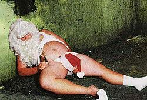

29 de febrero
 De: La Frikipedia, la enciclopedia extremadamente seria.
De: La Frikipedia, la enciclopedia extremadamente seria.
El 29 de febrero es el día más flojo del año ya que aparece cada cuatro años.
Uso
 Santa en su primera borrachera, a la tierna edad de 76 años
Éste es el verdadero día de la mala suerte, si no me crees mira lo que está más arriba (sé que estás de cabeza):
- En este día, cumples cada cuatro años, así que en el caso de que nacieras en el 2000, podrías conducir una moto en el 2064, y el coche en el 2072.
- Otras razones son que si por lo menos fuera festivo, pero no, ponen un día, y además laboral, que ya es mala hostia.
- Además, este día significa... no significa nada!. Gracias a él, nuestro pobre mes de febrero, que ya tenia que soportar ser el menor de los meses (de pequeño, enero y marzo le pegaban y se metían con él, pobrecillo), para mayor humillación, cada cuatro años le hacen ilusiones para que pueda aguantar tres años más de insultos. Por eso, algunas personas han creado la FIFA (Federación Ilegal de Febrero Arriba, o alguna gilipollez con las siglas correspondientes)
Curioso dia (des)
Cuenta una leyenda que cuando nació el gran Chuck Norris (por eso es leyenda, Chuck nunca nació, se creó a sí mismo) ninguno de los días le parecia el adecuado. Entonces, queriendo tener su día especial, dio una patada giratoria de tal magnitud a la Tierra que cada cuatro años exactos, ni tres ni cinco, da una vuelta más de la cuenta.
Otra leyenda dice que este día se creó porque en estos años se suele "elegir" a los politicos, esas personas que trabajan en nos dirigen y sirve de objeto de burla y chistes de malos a muy malos pasando por penosos. Así, al tener un día especial para las votaciones, estarían los 365 dias restantes del año tocándose los huevos trabajando.
Origen del nombre
El año bisiesto viene de bi, que quiere decir algo así como dos (se puede apreciar en la pronunciación "bi" suena idéntico a "dos") y siesto, que viene de siesta, que viene de los españoles. Por lo cual sacamos que inventaron el día para dormir "dos siestas", aunque no te da tiempo si conectas la hora de despertarse con la hora de irse a dormir.
Cosas que se pueden hacer ese día
- Puedes hacer algo.
- Tomártelo como un día cualquiera(Soso).
- Ver la tele colgado del techo.
- Probar arañas envueltas en chocolate.
- Nada.
- Algo, pero muy poco, casi nada.
- Si cae en festivo, nada.
- Si cae en laborable, nada.
- Si cae en un solar, nada.
- Si te cae bien, nada.
- Si quieres que te caiga, nada.
- Si te caes en el agua, nada.
- Siempre te queda la opción de pasarte el día durmiendo y así convertir el año bisiesto en un año del montón.
- Buscar Cactilios.
- Pasarte ese juego de Snes que tanto te costaba cuando pequeño.
- Levantarte.
- Lavarte (teniendo en cuenta que lo haces una vez al año).
- Jugar a no pisar las rayas de las baldosas.
Personajes celebres que nacieron el 29 de febrero
Febrero siempre fue discriminado por los demás meses, igual que este pingüino
- Dos o tres papas (en el Vaticano dan puntos por esto).
- Dos o tres futbolistas de equipuchos de provincias.
- El abuelo de un amigo.
- Josef Svatopluk Machar, don nadie del país Chetoslovaquia, que no hizo nada pero el nombre mola.
- C-3PO
- Tú
- Yo
- Yo no
- Él puede haber nacido
Acontecimientos
- De una patada giratoria de Chuck al planeta Namek, Superman llega a la Tierra en su nave huevo, seguramente pensado para no gastarse mucho dinero en celebraciones.
- Alguien hizo algo en algún sitio, y vivió para contarlo.
- No como otro que hizo algo en algún sitio y murió.
- Finalmente murió el malvado villano IP anónima
- Un preso escribió "Cien años de soledad, sombras, penurias, y porculadas" y "Como ejercitar la muñeca".
Por algún motivo, si buscas "Febrero Nazi" en google aparece esta imagen.
Autor(es):
- Fordus
- Doctor grijander
- MURO DE AGUAS
- Perdedor458
- Roms
- Viento
- OneRockingAngel
- Cybercrank
- Josek
- Veni Vidi Vici
Frikipedia 2005-2016, Licencia
GFDL 1.2 - Extraído por FrikiLeaks